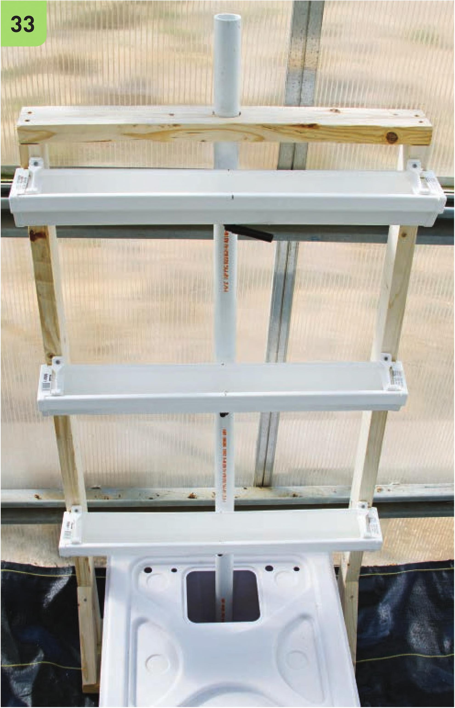
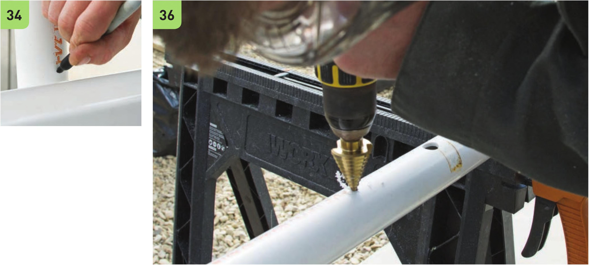

Irrigation Assembly The irrigation design in this system uses one main PVC pipe both for drainage and to conceal the tubing used for water delivery. The assembly of the irrigation could be simplified by removing the PVC pipe and using 1/2” vinyl tubing to connect all the drains and by running the water delivery tubing in the open (not concealed in a PVC pipe). I chose a more complicated irrigation design because it looks cleaner and avoids a potentially unsightly web of tubing. 33 Insert the 6' IV2" PVC pipe through the guide hole in the top crossbeam. Mark the approximate intersection of the 1 Vi PVC pipe and the V2" drainage tube coming from each gutter level. 34 Make a second set of marks approximately V2" above each gutter level. It will be important to distinguish between the marks made in the previous step and this step. 35 Remove the IV2" PVC pipe and fasten to the sawhorses using clamps. Using the step bit, drill a %" hole into each of the three marks made in step 33. This will be used for the Vi drainage tube. 36 Using the VC drill bit, drill a hole into each of the three marks created in step 34. This will be used for the VC water delivery line. HYDROPONIC GROWING SYSTEMS 129

